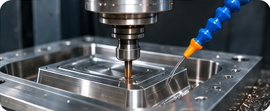
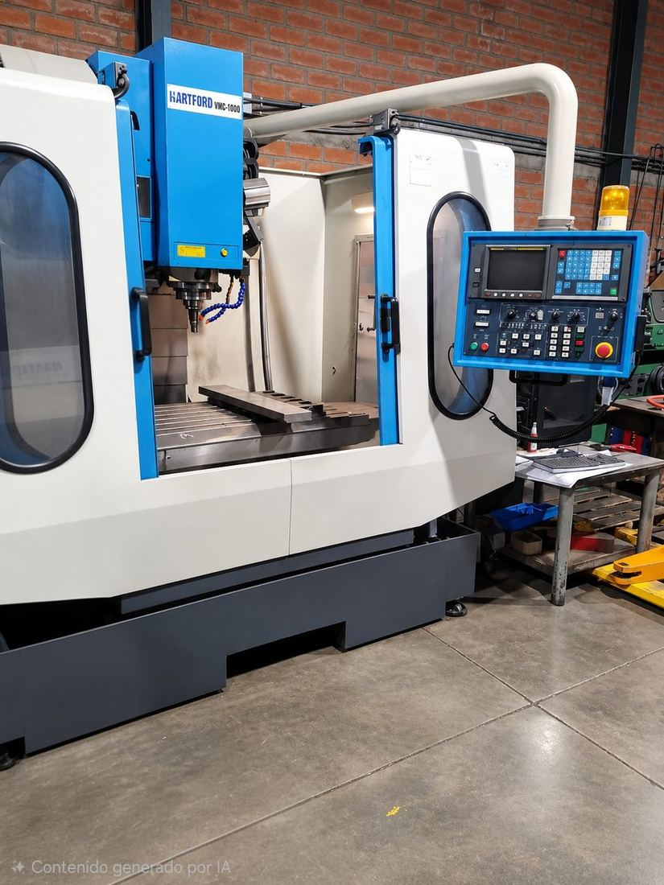
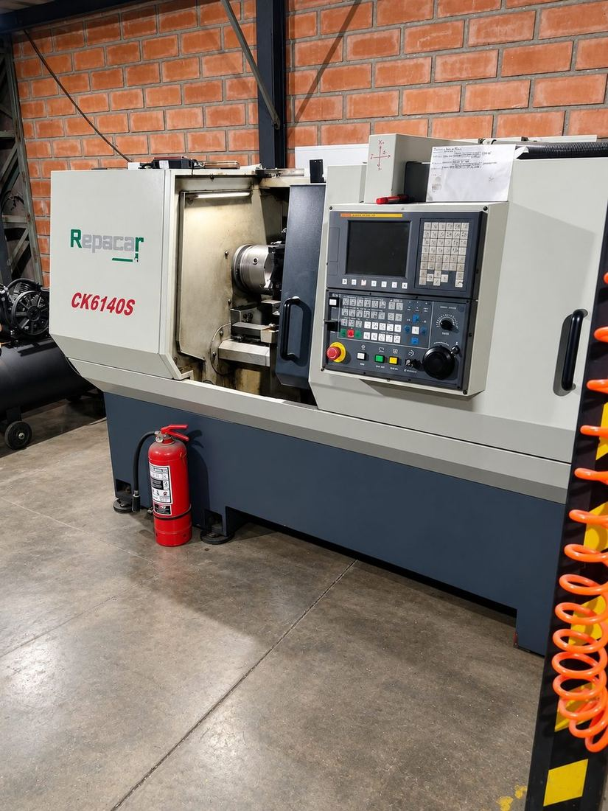

Una buena pieza empieza con un buen molde. En PlasticMarket diseñamos y fabricamos moldes para inyección de plástico y caucho termoplástico, pensados para producir con precisión.

La matricería es el diseño y fabricación de los moldes y matrices que dan forma a las piezas de plástico. Es la base de todo el proceso: la precisión, el acabado y la vida útil de una pieza dependen directamente de la calidad de su molde.
Fabricamos y mecanizamos nuestros propios moldes, matrices y piezas en nuestra planta de Santiago, con equipos CNC de precisión.

Contamos con un centro de mecanizado CNC vertical (VMC) modelo VMC-1000, con el que fabricamos y mecanizamos nuestros propios moldes y matrices con precisión.

Nuestro torno CNC CK6140S nos permite fabricar piezas de revolución con alta precisión, según planos y medidas específicas.
Para piezas de plástico y caucho termoplástico producidas en serie.
Ver inyección de plástico →Matrices que dan forma a perfiles y láminas continuas.
Ver extrusión y coextrusión →Matrices que unen dos o más materiales en un mismo perfil.
Revisión de tu plano o muestra y propuestas de mejora.
Diseño del molde.
Fabricación y ajuste.
Pruebas de inyección y aprobación de primeras piezas.
Como diseñamos el molde y también inyectamos, controlamos el proceso completo. Eso evita diferencias entre matricero e inyector y acorta los plazos.
Recibimos tu plano, dibujo o muestra.
Analizamos la pieza y proponemos mejoras para fabricarla mejor y a menor costo. Producción desde 100 unidades.
Diseñamos el molde o la matriz.
Fabricamos y ajustamos la herramienta.
Hacemos pruebas y aprobamos contigo las primeras piezas.
Pasamos a producción en nuestra planta.
Diseñamos el molde y además producimos la pieza, así controlamos todo el proceso sin intermediarios.
Un buen diseño de molde reduce defectos, acorta los ciclos de producción y baja el costo por pieza. Por eso revisamos cada pieza antes de fabricar la herramienta: espesores, ángulos de salida, puntos de inyección y enfriamiento.
Un plano, un dibujo con medidas o una muestra de la pieza, el material que necesitas y la cantidad aproximada que vas a producir.
Sí, a partir de una muestra podemos desarrollar el molde para reproducirla.
La inyección es ideal para piezas con forma definida producidas en serie; la extrusión, para piezas largas con la misma sección, como perfiles y láminas. Te ayudamos a elegir.
Sí, nuestro compuesto con partículas de cobre se integra en la materia prima de las piezas.
Contamos con un centro de mecanizado CNC vertical VMC-1000 para fresar, perforar, ranurar, roscar y contornear, y un torno CNC CK6140S para torneado exterior e interior, roscado y mecanizado de precisión de piezas según plano.
Desarrollamos productos a medida desde 100 unidades.